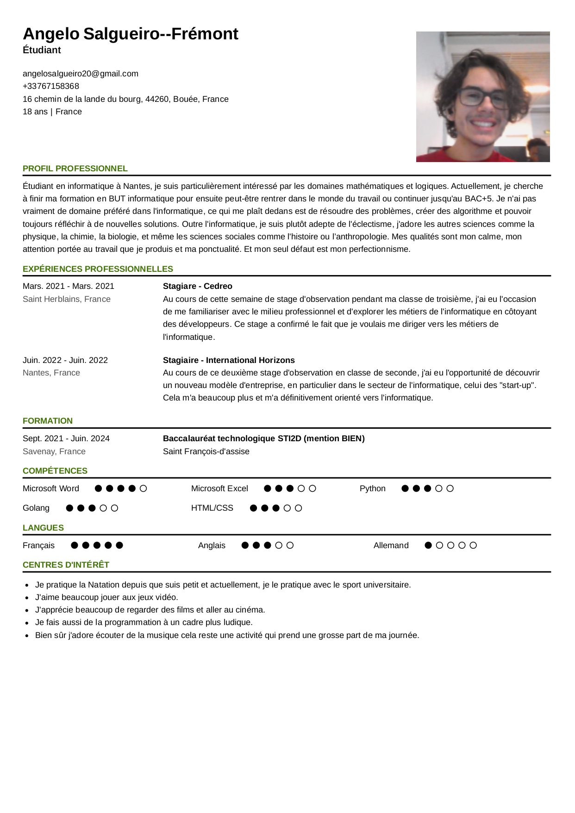

Lors de la fin de mon premier semestre j'ai eu l'occasion pour conclure la ressource sur le golang de programme en partie un jeux vidéo.
Bienvenue sur le portfolio de Angelo Salgueiro--Frémont
Courte présentation
Étudiant en informatique à Nantes, je suis particulièrement intéressé par les domaines mathématiques et logiques.
Actuellement, je cherche à finir ma formation en BUT informatique pour ensuite peut être rentrer dans le monde du travail
ou continuer jusqu'au BAC+5. Je n'ai pas vraiment de domaine préféré dans l'informatique,
ce qui me plaît dedans est de résoudre des problèmes, créer des algorithme et pouvoir toujours réfléchir à de nouvelles solutions.
Outre l'informatique, je suis plutôt adepte de l'éclectisme, j'adore les autres sciences comme la physique, la chimie, la biologie
et même les sciences sociales comme l'histoire ou l’anthropologie. Mes qualités sont mon calme,
mon attention portée au travail que je produis et ma ponctualité. Et mon seul défaut est mon perfectionnisme.
Mon curriculum vitae

Si vous voulez le télécharger au format pdf :
Mon CVMa lettre de motivation
Madame, Monsieur,
Étudiant en BUT Informatique à Nantes, je suis passionné par la résolution de problèmes et la création d'algorithmes. Grâce à mes stages chez Cedreo et International Horizons, j'ai confirmé mon choix de carrière et acquis une première expérience du milieu professionnel.
Sérieux, curieux et perfectionniste, je maîtrise Python, Golang et HTML/CSS. Motivé pour apprendre et m'impliquer dans vos projets, je serais ravi de rejoindre votre équipe.
Je reste à votre disposition pour un entretien.
Veuillez agréer, Madame, Monsieur, l’expression de mes salutations distinguées.
Angelo Salgueiro–Frémont
Mes projets scolaires
Projet quadtree

Mes expériences professionnelles
Stagiaire - Cedreo
Mars. 2021 - Mars. 2021
Au cours de cette semaine de stage d'observation pendant ma classe de troisième, j'ai eu l'occasion
de me familiariser avec le milieu professionnel et d'explorer les métiers de l'informatique en côtoyant
des développeurs. Ce stage a confirmé le fait que je voulais me diriger vers les métiers de
l'informatique.
Stagiaire - International Horizons
Juin. 2022 - Juin. 2022
Au cours de ce deuxième stage d'observation en classe de seconde, j'ai eu l'opportunité de découvrir
un nouveau modèle d'entreprise, en particulier dans le secteur de l'informatique, celui des "start-up".
Cela m'a beaucoup plus et m'a définitivement orienté vers l'informatique.
Mes projets personnels
Je pratique la Natation depuis que je suis petit et actuellement, je le pratique avec le sport universitaire.
J'aime beaucoup jouer aux jeux vidéo.
J'apprécie beaucoup de regarder des films et aller au cinéma.
Je fais aussi de la programmation à un cadre plus ludique pour m'aider à résoudre des problèmes de mon quotidien.
Bien sûr j'adore écouter de la musique cela reste une activité qui prend une grosse part de ma journée.